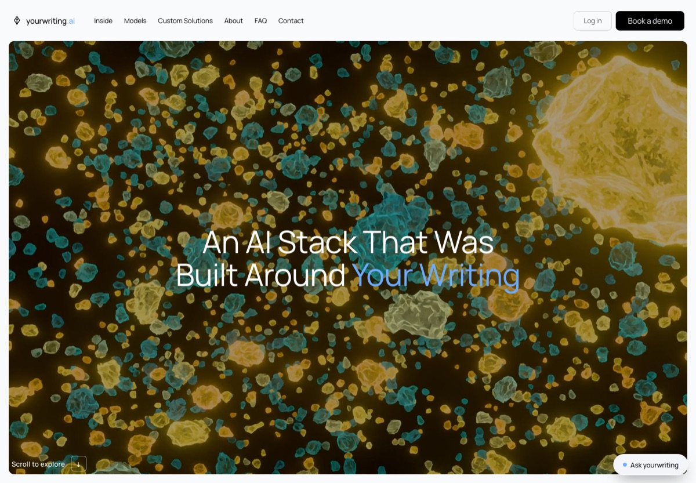
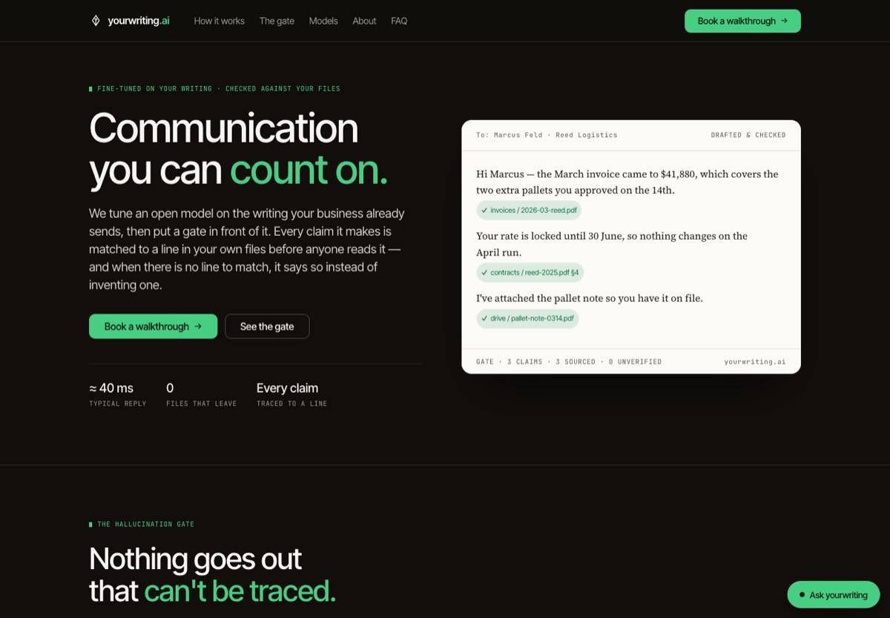
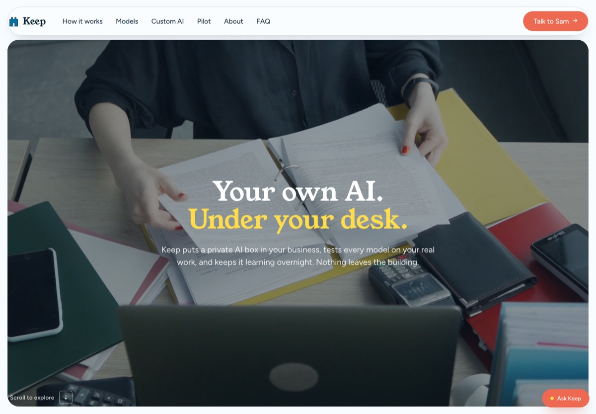

yourwriting.ai
Three concept sites, one product.
A writing model tuned on the words your business already sends, running on a box in your own building. Same feature set on each: the scroll story, a model scorecard, model reports, fine-tuning, about, FAQ, contact and a chat widget.

The techy cut · enterprise
yourwriting.ai — the stack
Scale-style proportions, indigo black, a three-act scroll story from the screen to the office floor plan. Built for the buyer who wants to see the machinery.
Open the stack →
The fine-tuning cut · with the gate
yourwriting.ai — communication you can count on
Everything aimed at one promise: tuned on your writing, and a hallucination gate that traces every claim to a line in your own files before anyone reads it.
Open the gate →
The sibling · small business
Keep — a box under your desk
The same idea for a five-to-sixty person business: light, blue and orange and yellow, a founder named Sam, a thirty-day pilot and three boxes to pick from.
Open Keep →